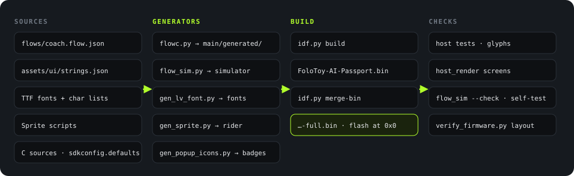

English · 简体中文
Build
Firmware build
From source files to firmware

tools/validate.sh and main/CMakeLists.txt.Scripts make four kinds of content in the firmware. Nobody writes these files manually.
| Output | Input | Script | Files |
|---|---|---|---|
| State machine and screens | flows/coach.flow.json |
tools/flow/flowc.py |
Four .c/.h pairs in main/generated/ |
| Simulator | The same flow graph | tools/flow/flow_sim.py |
assets/sim/coach-flow.html |
| Fonts | Noto Sans SC and Staatliches (OFL 1.1), with character lists | assets/tools/gen_lv_font.py |
assets/fonts/heygo_*.c |
| Sprites | Drawing definitions in the scripts | gen_sprite.py, gen_popup_icons.py |
assets/sprites/*.c |
The state machine and the simulator come from the same graph. Thus, the behavior in the simulator is the behavior of the device. flowc.py --check and flow_sim.py --check fail when a generated file is old.
Fonts
| Font | Glyphs | Use |
|---|---|---|
heygo_sc_16 |
3,871 | Body text. It includes GB2312 level 1 (3,755 characters), because it shows transcripts and answers from the phone. |
heygo_sc_28 |
202 | Large state words. Only the screen vocabulary. |
heygo_display_20/34/48 |
95 each | The Staatliches brand face, for numbers and English labels. |
Sources: assets/fonts/*.chars.txt and the file header of assets/tools/gen_lv_font.py.
Build
- Install ESP-IDF 5.5.3.
- Activate the environment:
. $IDF_PATH/export.sh. - In
Firmware/, run the gate:./tools/validate.sh.
The gate builds in a temporary directory, so the work tree stays clean. The build steps (tools/validate.sh:145-175):
SDKCONFIG_DEFAULTS=sdkconfig.defaults idf.py -B <temp dir> build
idf.py -B <temp dir> merge-bin -o FoloToy-AI-Passport-full.bin
python3 tools/verify_firmware.py <temp dir> # partitions and image offsets
python3 tools/host_render/render.py ... # screen images
python3 tools/archive_firmware.py create ... # debug archive
Outputs:
| File | Content | Use |
|---|---|---|
build/FoloToy-AI-Passport-full.bin |
Bootloader, partition table, and application in one file | Flash at 0x0 for a new device or a full refresh. |
build/FoloToy-AI-Passport.bin |
Application only | It has no bootloader and no partition table. Do not upload it alone. |
Build results for this book
On 2026-10-18, we ran the full gate at main commit 284ab00. The exit code was 0.
| Item | Result |
|---|---|
| Host tests | All PASS: protocol, ADPCM, playback rules, keys, link core, and screen parts |
| Simulator | --check PASS, self-test 128/128 |
| Glyphs | PASS, 72 vocabulary strings and 47 flow texts |
| Layout | Application 1,948,640 of 8,323,072 bytes, in factory at 0x10000 |
| Merged image | 2,014,176 bytes, flash at 0x0 |
Compiler settings: -Og (debug optimization), with assertions. The flash uses DIO mode at 80 MHz (generated sdkconfig).
Flashing
Source: Firmware/docs/development/engineering/firmware-layout.md, section "Flashing and stored data".
| Case | Method | Caution |
|---|---|---|
| New device or full refresh | Write …-full.bin at 0x0. |
The merged file fills the gaps between images. It can reset the NVS and PHY data. |
| Daily development | Segmented flash: idf.py -p <port> flash |
It keeps the NVS, if the partition layout is compatible. |
| Erase the full chip | idf.py erase-flash |
It erases all user data. Do not use it as a routine step. |
- Logs and flashing use the built-in USB Serial/JTAG of the ESP32-C3. GPIO18 and GPIO19 are for USB (
Firmware/docs/README.md). - You do not need a backup of the old firmware before you flash. The new firmware keeps no rollback copy.